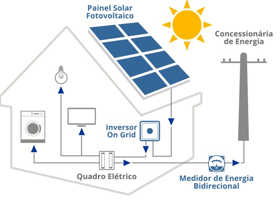

A eficiência da conversão luz/eletricidade de uma célula fotovoltaica é a proporção de energia
de luz solar que a célula converte a energia elétrica. Isto é muito importante quando discutivos
dispositivos fotovoltaicos, porque melhorando esta eficiência podemos fazer com que estes
dispositivos
tornem-se mais competitivos com as demais fontes de energia.. Naturalmente,
se um painel solar eficiente
pode prover tanta energia quanto dois painéis menos eficientes,
então o custo daquela energia será reduzido
É óbvio que do outro lado desta equação está o dinheiro
gasto para a fabricação.